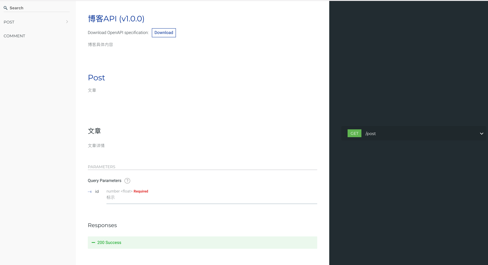

Salak简介
快速入门
基础功能
目录结构
内置对象
配置
Context
Controller
Service
Helper
中间件
日志
定时任务
启动自定义
文档
进阶功能
CURL
代码风格指南
Published with GitBook
Salak简介
Salak
Salak 是一个基于
koa 2.0
开发的应用框架，主要目的是为了降低日常的开发成本以及维护成本。
为什么要开发Salak
每次写接口，需要梳理文档
需要去定义路由配置，存在着一定的开发成本
团队成员开发习惯不同，造成沟通成本、维护成本增高
特性
自动生成文档
路由自动装载
数据
Joi
校验
基于模块开发
增强型中间件
文档示例

results matching "
"
No results matching "
"